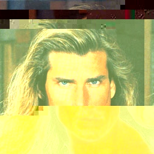
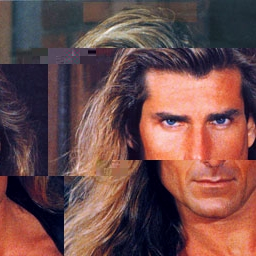
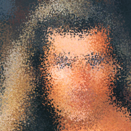

ExamplesColor fry Contrast equalizer Contrast equalizer It's saturated It's saturated Standard fry add_noise add_noise glitch glitch jpeg_compression jpeg_compression set_brightness set_brightness set_contrast set_contrast sharpen sharpen Struct fry D-D-D-D-Dither D-D-D-D-Dither Round the cylinder Round the cylinder dot clustering dot clustering Who the hell is Gabor Who the hell is Gabor Gaussian filtering Gaussian filtering Bubble like Gauss Bubble like Gauss Laplace like bubble Laplace like bubble Pixie the pixel Pixie the pixel Chess time Chess time Glitch that itch Glitch that itch They say it's ridged They say it's ridged Cows are spherical Cows are spherical Get that swirl Get that swirl